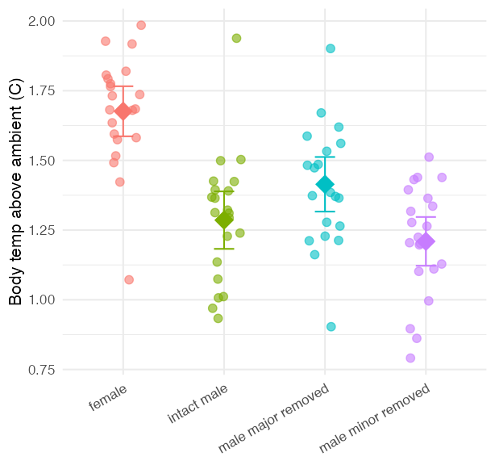
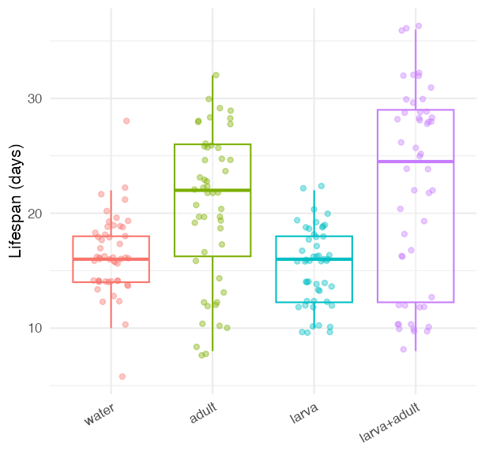

One-way ANOVA as regression with a categorical predictor: partitioning sums of squares, the F-ratio, assumptions and diagnostics, setting the reference level with fct_relevel(), post-hoc testing, reporting, and the non-parametric route when assumptions genuinely fail. Uses the fiddler crab claw-radiator experiment and a nematode lifespan dataset.
Author
Bill Perry
Where We Left Off
Covered last time — Multiple Regression:
Partial slopes, and why they are conditional
Collinearity, and saying “these data cannot separate them”
Interactions
Factors, dummy variables, and fct_relevel()
Model comparison with adjusted R² and AIC
Note
✅ Key idea from last lecture
You already built an ANOVA table for a regression, and you already turned a categorical predictor into dummy variables.
Today every predictor is categorical. The machinery does not change at all — only the name on the front does.
Part 1 · Overview
Today’s Objectives
One-way ANOVA, end to end:
Why ANOVA is regression with a categorical predictor
Whitlock & Schluter, Ch. 15 — Comparing Means of More Than Two Groups.
Gotelli & Ellison, Ch. 10 — The Analysis of Variance.
Continuous X
Categorical X
Continuous Y
Regression
ANOVA
Categorical Y
Logistic
Contingency
The Study · Does a Big Claw Act as a Radiator?
A male fiddler crab has one hugely enlarged claw. Darnell & Munguia asked whether it doubles as a heat radiator, dumping heat so the crab can stay out foraging in the sun.
Four groups of 21 crabs each, body temperature above ambient measured in the field:
intact male — the control
male major removed — the big claw taken off
male minor removed — a small claw taken off, the procedural control
female — never had a major claw at all
If the big claw sheds heat, removing it should make males hotter.
# A tibble: 4 × 2
crab_type n
<fct> <int>
1 female 21
2 intact male 21
3 male major removed 21
4 male minor removed 21
Note
A balanced design
Equal n in every group — which makes the degrees-of-freedom arithmetic below clean, and the test robust.
🗳️ How Today Works
Warning
🗳️ Six times today, you make the call
Six slides are marked 🗳️ DECIDE. Each asks a multiple-choice question, and I will not tell you the answer on that slide.
How it works: write your letter down — actually write it — then hold up fingers 1–4. If the room splits, turn to the person next to you, argue for ninety seconds, and we vote again. Nothing here is graded. The point is that you commit before you find out.
Part 2 · ANOVA Is Regression
Same Machinery, Different Predictor
Regression
\[Y_i = \beta_0 + \beta_1X_i + \varepsilon_i\]
X is continuous
H₀: β₁ = 0
One slope
ANOVA
\[Y_{ij} = \mu + A_i + \varepsilon_{ij}\]
\(A_i\) is the effect of group i
H₀: μ₁ = μ₂ = … = μₖ
One coefficient per group, minus one
Both:
Partition total variation into explained and left over
Divide each sum of squares by its degrees of freedom
Test with an F-ratio of the two mean squares
Important
✅ The same lm() call
# regressionlm(absorbance ~ nitrate, data = df)# ANOVAlm(body_temp_c ~ crab_type, data = df)
The only difference is that crab_type is a factor, so R builds dummy variables for you — exactly as it did last week.
🗳️ DECIDE · Why Not Just Run All the t-tests?
With four crab groups there are six possible pairwise t-tests. Suppose every group really has the same mean, and you run all six at α = 0.05.
What is the chance you get at least one “significant” result?
(a) 5% — that is what α = 0.05 means
(b) About 12%
(c) About 26%
(d) 30% — 6 × 5%
Warning
✍️ Write your letter down, then vote.
Note
The question to ask
What is the chance of getting no false positives in six independent tries?
The Multiple-Comparisons Problem
Important
✅ The answer is (c) — about 26%.
\[1 - (1 - 0.05)^6 = 0.265\]
Each test has a 95% chance of behaving. Six in a row behave only 73.5% of the time, so you have roughly a one in four chance of at least one false positive — before you have learned anything.
(d) is the common guess. Adding probabilities overshoots, because the ways of being wrong overlap.
ANOVA’s job is to ask one question first:is there any difference at all among these groups?
One test, one α, one p-value. Only if it rejects do you go looking for which groups differ — and then you use a post-hoc method that controls the error rate across that whole family of comparisons.
With 10 groups there are 45 pairs, and the chance of at least one false positive is over 90%.
Part 3 · The Logic
ANOVA’s Question
Even if every group had the same true mean, the sample means would differ, just from sampling error.
ANOVA asks whether the sample means differ more than sampling error alone would produce:
\(MS_{among}\) — how spread out the group means are
\(MS_{within}\) — how spread out individuals are inside their own group
\[F = \frac{MS_{among}}{MS_{within}}\]
H₀: μ₁ = μ₂ = μ₃ = μ₄
H₁: at least one mean differs

Where the Variation Goes
Every point’s distance from the grand mean splits into two pieces, exactly as in regression:
with a groups and \(n_i\) observations in group i:
\(df_{among} = a - 1\) = 3
\(df_{within} = N - a\) = 80
\(df_{total} = N - 1\) = 83
Tip
🖐 Note the \(n_i\)
Each group mean’s deviation is weighted by that group’s own sample size. With a balanced design every \(n_i\) is the same and it simplifies to \(n\sum(\bar{Y}_i - \bar{Y})^2\) — but only then.
Our design is balanced at n = 21, so both forms agree here.
crab_model <-lm(body_temp_c ~ crab_type, data = crab_df)anova(crab_model)
Analysis of Variance Table
Response: body_temp_c
Df Sum Sq Mean Sq F value Pr(>F)
crab_type 3 2.6413 0.88044 20.312 6.997e-10 ***
Residuals 80 3.4676 0.04335
---
Signif. codes: 0 '***' 0.001 '**' 0.01 '*' 0.05 '.' 0.1 ' ' 1
Every number is one you just built:
Sum Sq — 2.64 and 3.47
Df — a − 1 = 3, N − a = 80
Mean Sq — Sum Sq ÷ Df
F value — the ratio of those two mean squares
F = 20.31, p = 7.00e-10.
🗳️ DECIDE · What Does That F Tell You?
The ANOVA returns F = 20.31, p = 7.00e-10.
What have you just learned?
(a) All four crab types have different mean temperatures
(b) At least one crab type differs from at least one other
(c) Removing the major claw raises body temperature
(d) The major claw explains 43.2% of the variation in temperature, so the radiator hypothesis is supported
Warning
✍️ One letter. Write it down.
Note
The question to ask
What was the null hypothesis, exactly?
A test can only tell you about the hypothesis it tested.
What F Does and Does Not Say
Important
✅ The answer is (b).
H₀ was “all four means are equal.” Rejecting it says at least one differs — not which, not how many, and not in which direction.
(a) claims far more than the test supports. (c) is a directional claim about one specific pair; that needs a post-hoc comparison, and Part 8 shows it is not even true. (d) misreads R²: 0.432 is the variance explained by crab type, which bundles sex and two surgeries together, not by the claw alone.
Warning
⚠️ The most common ANOVA mistake
Reporting a significant F and then describing whichever group means look farthest apart, as though the F test had said so.
It did not. The F test is an entry ticket, not an answer.
Part 5 · The F-Ratio
What F Actually Is
\[F = \frac{MS_{among}}{MS_{within}}\]
\(MS_{within}\) estimates the background variance σ² — pooled from inside the groups, where the treatment cannot reach
\(MS_{among}\) estimates that same σ², plus anything real that separates the group means
If H₀ is true, both estimate σ² and F ≈ 1
Here F = 20.31 — the group means are 20 times further apart than within-group noise alone can explain.
Tip
🖐 Why F is never negative
It is a ratio of two variances, and a variance is a sum of squares. The direction of a difference disappears the moment you square it — which is why a significant F cannot tell you which way anything went.
F and t Are the Same Test
Take just two of the four groups — intact males and females — and test them both ways:
Crab type accounts for about 43.2% of the variation in body temperature. The rest is individual crabs being individual crabs.
summary(crab_model)$r.squared
[1] 0.4323687
Note
Significant and partial, at the same time
p = 7.00e-10 says the group differences are not noise. R² = 0.43 says they explain under half of what is going on.
Both are true, and a results section should carry both.
Part 6 · Assumptions and Diagnostics
The Three Assumptions
One-way ANOVA assumes:
Independence — observations do not depend on each other. This one comes from the design, and no plot can rescue it
Normality — of the residuals, not of the raw response
Equal variance (homoscedasticity) across groups
ANOVA is fairly robust to mild departures from 2 and 3 when the design is balanced, which is one more reason to plan for equal n.
Warning
⚠️ Normality of what?
Not body_temp_c. Not each group separately. The residuals of the fitted model — exactly as in regression.
A response that looks bimodal because the groups differ is perfectly fine; that is the effect you are testing.
The Four Diagnostic Plots
The same four panels you read for a regression:
Residuals vs fitted — with a factor, the points stack in vertical columns, one per group. You are looking for equal spread in each column
QQ plot — residuals against normal
Scale-location — same check, easier to see
Residuals vs leverage — influential points
Levene’s Test — Equal Variances
leveneTest(body_temp_c ~ crab_type, data = crab_df)
Levene's Test for Homogeneity of Variance (center = median)
Df F value Pr(>F)
group 3 0.1587 0.9238
80
H₀ is “the variances are equal”, so a large p-value is the good outcome — the same backwards logic as Shapiro-Wilk.
p = 0.924 — nothing to worry about.
Tip
🖐 Levene vs Bartlett
Bartlett’s test is more powerful but assumes normality itself. Levene’s works on absolute deviations from the group median, so it is far more robust. Use Levene.
Shapiro-Wilk — Normality of the Residuals
shapiro.test(residuals(crab_model))
Shapiro-Wilk normality test
data: residuals(crab_model)
W = 0.97566, p-value = 0.112
Note what goes inside: residuals(crab_model).
p = 0.112 — the residuals are consistent with normal.
Warning
⚠️ Do not let the test overrule the plot
At small n it cannot detect real problems; at large n it flags departures too small to matter. The QQ plot is the primary evidence.
One Call for All of It
performance::check_model() draws every assumption check in one labelled panel, with a plain-English caption on each.
check_model(crab_model)
Useful for a quick look. Still worth knowing what each panel is, which is why we did them one at a time first.
Part 7 · The Reference Level, Again
R Sorts Alphabetically — Still
Read the file without thinking about it and the four crab types become a factor in alphabetical order:
levels(crab_df$crab_type)
[1] "female" "intact male" "male major removed"
[4] "male minor removed"
So the reference is female — and every coefficient in the model becomes “compared with a female crab.”
Warning
⚠️ That is the wrong baseline for this experiment
The question is what happens when you remove a claw from a male. The comparison that answers it is against an intact male, not against a female.
The model fits identically either way. The output only answers your question if you tell it what your question was.
🗳️ DECIDE · Which Crab Is the Control?
You are about to set the reference level deliberately.
Which level should it be, and why?
(a)female — keep R’s default; the model fit is identical anyway
(b)intact male — the untouched version of the animals that were manipulated
(c)male minor removed — it is the procedural control, so it accounts for the surgery
(d) It makes no difference, because the F-test and R² do not change
Warning
✍️ Careful — two of these are true statements. Only one is the right decision.
Note
The question to ask
Which single comparison do I most want to read straight off the coefficient table?
fct_relevel() · Saying What You Meant
Important
✅ The answer is (b).
is true — F, R², and the ANOVA table are identical whichever level is the reference. That is not a reason to accept a default chosen by spelling.
is tempting and it is the right comparison to make eventually — but as the baseline it hides the very contrast the experiment was built around.
Estimate Std. Error t value Pr(>|t|)
(Intercept) 1.286 0.045 28.300 0.000
crab_typefemale 0.390 0.064 6.077 0.000
crab_typemale major removed 0.129 0.064 2.001 0.049
crab_typemale minor removed -0.076 0.064 -1.186 0.239
Now every row reads as “degrees hotter than an intact male”:
female+0.39 — clearly hotter
male major removed+0.13
male minor removed-0.08
Tip
🖐 The habit
Set the reference in the same line that creates the factor. fct_relevel(x, "control") moves one level to the front and leaves the rest alone.
Part 8 · Post-Hoc Testing
What Post-Hoc Tests Are For
The F-test said something differs. Post-hoc tests say what, while keeping the family-wide error rate at α.
Planned (a priori) comparisons — a small number of contrasts you committed to before seeing the data. More powerful, because there are fewer of them
Unplanned (post-hoc) comparisons — all pairs, after the fact. Safer, less powerful
Tukey’s HSD is the standard for all pairwise comparisons with equal n.
Warning
⚠️ Deciding after you look is not a plan
Choosing which comparisons to make because they looked big re-introduces exactly the multiple-comparisons problem the correction exists to solve.
Tukey’s HSD
TukeyHSD(aov(crab_model))
Tukey multiple comparisons of means
95% family-wise confidence level
Fit: aov(formula = crab_model)
$crab_type
diff lwr upr
female-intact male 0.39047619 0.22189182 0.55906056
male major removed-intact male 0.12857143 -0.04001294 0.29715579
male minor removed-intact male -0.07619048 -0.24477484 0.09239389
male major removed-female -0.26190476 -0.43048913 -0.09332040
male minor removed-female -0.46666667 -0.63525103 -0.29808230
male minor removed-male major removed -0.20476190 -0.37334627 -0.03617754
p adj
female-intact male 0.0000002
male major removed-intact male 0.1962212
male minor removed-intact male 0.6375171
male major removed-female 0.0006106
male minor removed-female 0.0000000
male minor removed-male major removed 0.0108312
Each row is one pair: the difference in means, a confidence interval, and a p-value already adjusted for the whole family of six comparisons.
A pair differs when its interval excludes zero.
🗳️ DECIDE · Reading the Tukey Output
The radiator hypothesis predicts that a male whose major claw was removed should run hotter than an intact male.
Tukey gives male major removed − intact male a difference of +0.129 with an adjusted p = 0.196.
What should you conclude?
(a) The hypothesis is supported — the difference is in the predicted direction
(b) The hypothesis fails — removing the major claw did not significantly change temperature
(c) The hypothesis is supported, because females are significantly hotter than every male group
(d) Nothing can be concluded, because the overall ANOVA was significant
Warning
✍️ One letter, then argue it with your neighbour.
Note
The question to ask
Which comparison does the hypothesis actually make a prediction about?
What Tukey Actually Found
Important
✅ The answer is (b).
Removing the major claw moved temperature by 0.13 °C, adjusted p = 0.2 — not distinguishable from zero. The direction is right and the evidence is not there.
(c) is the trap: females are hotter than every male group, but females differ from males in many ways besides the claw. That comparison cannot test a claw-removal hypothesis.
What did differ (adjusted p):
Comparison
p
female − intact male
0
major removed − intact
0.196
minor removed − intact
0.638
major − minor removed
0.011
The big effect in this dataset is sex, not surgery.
Estimated Marginal Means
emmeans gives the same comparisons with more control — any contrast you like, any adjustment method:
contrast estimate SE df t.ratio p.value
intact male - female -0.3905 0.0643 80 -6.077 <0.0001
intact male - male major removed -0.1286 0.0643 80 -2.001 0.1962
intact male - male minor removed 0.0762 0.0643 80 1.186 0.6375
female - male major removed 0.2619 0.0643 80 4.076 0.0006
female - male minor removed 0.4667 0.0643 80 7.263 <0.0001
male major removed - male minor removed 0.2048 0.0643 80 3.187 0.0108
P value adjustment: tukey method for comparing a family of 4 estimates
Tip
🖐 Why emmeans and not just TukeyHSD()
TukeyHSD() only does all-pairs on a balanced aov. emmeans handles unbalanced designs, covariates, several factors and planned contrasts — and it is what you will use from Week 9 onward.
Part 9 · Reporting
Reporting an ANOVA
A results sentence needs the test, the statistic with both df, the p-value, and the direction — then the post-hoc detail.
Body temperature differed among crab types (one-way ANOVA, F3,80 = 20.31, p < 0.001, R² = 0.43). Females were warmer than intact males by 0.39 °C (Tukey HSD, adjusted p < 0.001), but removing the major claw did not detectably change male temperature (0.13 °C, adjusted p = 0.2).
Note
✅ What that sentence does
Names the test
Gives both degrees of freedom
Reports effect size, not just p
States the post-hoc method and that its p-values are adjusted
Reports the non-significant comparison the hypothesis was about, rather than quietly dropping it
Part 10 · When the Assumptions Fail
A Second Dataset · Nematode Lifespan
The crab data behaved. Most data do not.
Here are 200 nematodes, 50 in each of four treatments, exposed to a parasite as larvae, as adults, as both, or to water as a control. The response is lifespan in days.
# A tibble: 4 × 2
treatment n
<fct> <int>
1 water 50
2 adult 50
3 larva 50
4 larva+adult 50

Note that the water control sorts last alphabetically — another reason to relevel on purpose.
These Assumptions Genuinely Fail
worm_model <-lm(lifespan_days ~ treatment, data = worm_df)shapiro.test(residuals(worm_model))
Shapiro-Wilk normality test
data: residuals(worm_model)
W = 0.97626, p-value = 0.001808
leveneTest(lifespan_days ~ treatment, data = worm_df)
Levene's Test for Homogeneity of Variance (center = median)
Df F value Pr(>F)
group 3 22.481 1.493e-12 ***
196
---
Signif. codes: 0 '***' 0.001 '**' 0.01 '*' 0.05 '.' 0.1 ' ' 1
Shapiro-Wilk p = 0.00181 — residuals are not normal
Levene p = 1.49e-12 — variances are nowhere near equal
Look back at the boxplots: group SDs run from 3.3 to 8.7 days.
Warning
⚠️ Nothing here is simulated
This is the published dataset, unmodified. Real data fails these tests routinely.
🗳️ DECIDE · What Do You Do Now?
An ANOVA on these data returns F = 15.25, p = 5.87e-09 — but the residuals are non-normal and the variances are unequal.
What is the right next step?
(a) Report the ANOVA — it is significant, and ANOVA is robust
(b) Drop the group with the biggest variance and re-run
(c) Try a transformation, and if that fails use a rank-based test such as Kruskal-Wallis
(d) Report nothing — the data cannot be analysed
Warning
✍️ Write your letter down, then vote.
Note
The question to ask
Is the problem with the data, or with the test I chose for it?
The Kruskal-Wallis Test
Important
✅ The answer is (c).
Transform first — a log or square root often fixes both problems at once, and keeps you in a framework that extends to more factors. If it does not, move to a rank-based test.
(b) is data deletion to make a test pass, which is not a repair.
kruskal.test(lifespan_days ~ treatment, data = worm_df)
Kruskal-Wallis rank sum test
data: lifespan_days by treatment
Kruskal-Wallis chi-squared = 29.463, df = 3, p-value = 1.79e-06
Kruskal-Wallis replaces every value by its rank and asks whether the rank totals differ more than chance — so it needs no normality and is not thrown by unequal spread.
χ² = 29.46, df = 3, p = 1.79e-06.
The conclusion survives. What changes is that you can now defend it.
Dunn’s Test — the Post-Hoc for Ranks
Kruskal-Wallis has the same limit as F: it says something differs, not what. Dunn’s test is its post-hoc.
"bonferroni" is the strictest and costs the most power. "bh" (Benjamini-Hochberg) controls the false discovery rate instead, and is the usual choice when you have more than a handful of comparisons.
pairwise.wilcox.test() does a similar job; Dunn’s is preferred because it uses the same ranking as the Kruskal-Wallis it follows.
Which Test Should You Use?
Situation
Parametric route
Non-parametric route
Compare 2 groups
t-test
Mann-Whitney U / Wilcoxon rank-sum
Compare 3+ groups
one-way ANOVA
Kruskal-Wallis
Post-hoc, all pairs
Tukey HSD, emmeans
Dunn’s test, pairwise Wilcoxon
What it compares
means
mean ranks (≈ medians)
Needs
normal residuals, equal variance
neither
Costs you
nothing, when assumptions hold
power, and the original units
Try a transformation before you give up the parametric route — it keeps your effect sizes interpretable and extends to the multi-factor designs coming in Week 9.
Reporting a Non-Parametric Result
Nematode lifespan differed among parasite-exposure treatments (Kruskal-Wallis χ²3 = 29.46, p < 0.001). A Kruskal-Wallis test was used because the residuals of the equivalent ANOVA were non-normal (Shapiro-Wilk p = 0.00181) and variances were unequal (Levene p = 1.49e-12). Dunn’s tests with Benjamini-Hochberg adjustment showed that larva-exposed worms outlived worms exposed as adults or as both.
Important
✅ Say why you went non-parametric
A reader cannot tell whether you chose a rank test because your data required it or because it gave you the answer you wanted — unless you show the assumption checks that made the decision.
Report the numbers that drove the choice, not just the choice.
Wrap-up
Today you:
Saw that ANOVA is regression with a categorical predictor — the same lm(), the same partition, the same F
Worked out why six t-tests carry a 26% chance of a false positive, and what ANOVA does about it
Built \(SS_{among}\) and \(SS_{within}\) by hand and matched them to anova()
Confirmed t² = F on a two-group subset, for the second time this term
Checked independence, normality and equal variance — the last two on the residuals
Set the reference level with fct_relevel() so the coefficients answered the experiment’s question
Used Tukey HSD to find which pairs differ, and learned that the claw-removal comparison was not one of them
Moved to Kruskal-Wallis and Dunn’s test on a dataset whose assumptions genuinely failed
The Three Things to Carry Out of Here
Important
⚠️ A significant F is an entry ticket
It says at least one group differs. It never says which, how many, or in which direction. Everything past that comes from post-hoc comparisons you planned or corrected for.
Note
✅ Assumptions live in the residuals
Except independence, which lives in the design — and no plot will ever show it to you.
Important
✅ Set the reference level
fct_relevel(x, "control"), in the line that makes the factor. The fit never changes; the readability always does.
Note
Up next — Two-Way ANOVA
Two factors at once, and the thing that only exists when you have two: the interaction.
Readings
Whitlock & Schluter, Ch. 15 — Comparing Means of More Than Two Groups (§15.4 assumptions and transformations; §15.5 planned and unplanned comparisons; §15.6 the Kruskal-Wallis test).
Gotelli & Ellison, Ch. 10 — The Analysis of Variance.
Darnell, M. Z., & Munguia, P. (2011). Thermoregulation as an alternate function of the sexually dimorphic fiddler crab claw. The American Naturalist, 178(3), 419–428.
Getting unstuck
When code breaks — and it will, that is normal:
Read the error message out loud; it usually names the line
Check the usual suspects: is your grouping column a factor? Did you pass residuals(model) to shapiro.test() rather than the raw response? Is car loaded for leveneTest(), FSA for dunnTest()?
?function_name opens the help page
Bring the exact error (copy-paste it) to class or office hours
Note
✅ Key idea
Every working scientist googles error messages daily. Getting stuck is not failing — it is the job.